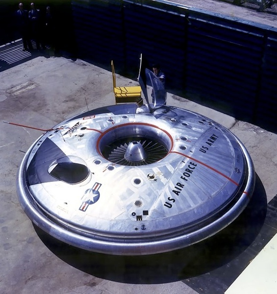

Ever since the dawn of heavier-than-air flight, inventors have tried to design new kinds of aircraft in order to achieve improved performance, introduce new capabilities, or just do something different. In this series we describe some of the stranger aircraft that have actually flown.
This month we celebrate the VZ-9V Avrocar one of the most popular weird aircraft because it looks just like a flying saucer! The Avrocar was buit by Avro Canada under a contract from the US Air Force and first flew in December 1959. Unfortunately, despite a predicted speed of 300 miles per hour and a range of 1,000 miles, the prototype never managed to get more than a few feet off the ground! (But it looks great!)
